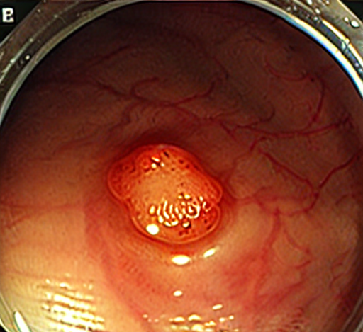
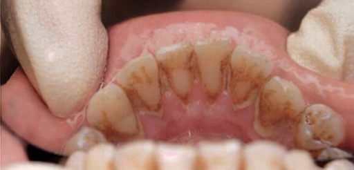
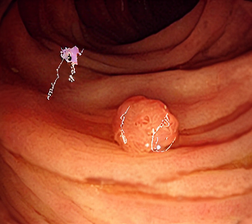
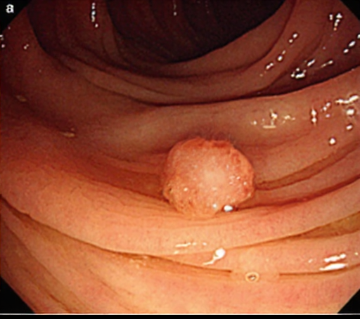
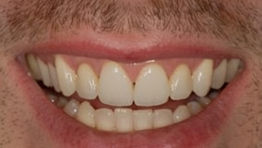
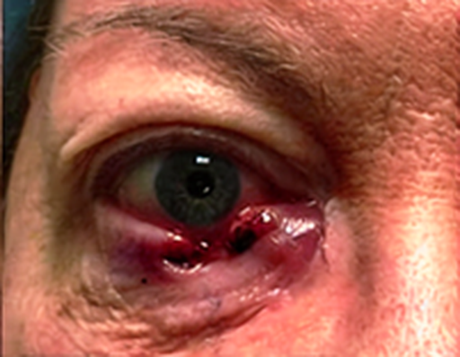
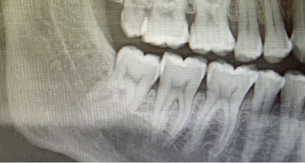
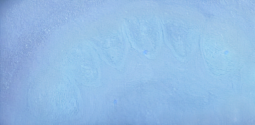

Abstract
Text-guided image editing has seen rapid progress in natural image domains, but its adaptation to medical imaging remains limited and lacks standardized evaluation. Clinically, such editing holds promise for simulating surgical outcomes, creating personalized teaching materials, and enhancing patient communication. To bridge this gap, we introduce MedEBench, a comprehensive benchmark for evaluating text-guided medical image editing. It consists of 1,182 clinically sourced image-prompt triplets spanning 70 tasks across 13 anatomical regions. MedEBench offers three key contributions: (1) a clinically relevant evaluation framework covering Editing Accuracy, Contextual Preservation, and Visual Quality, supported by detailed descriptions of expected change and ROI (Region of Interest) masks; (2) a systematic comparison of seven state-of-the-art models, revealing common failure patterns; and (3) a failure analysis protocol based on attention grounding, using IoU (Intersection over Union Ratio) between attention maps and ROIs to identify mislocalization. MedEBench provides a solid foundation for developing and evaluating reliable, clinically meaningful medical image editing systems.
MedEBench Overview

MedEBench consists of 1,182 samples across 13 categories. Each sample includes an input image, a reference image, an editing prompt, an ROI mask, and a detailed description of expected change.
Evaluation Metrics
Contextual Preservation: We evaluate whether the model preserves regions unrelated to the intended edit by computing the Structural Similarity Index (SSIM) between the previous image \( I_{\text{prev}} \) and the edited image \( I_{\text{edit}} \), excluding the region-of-interest (ROI) mask \( \mathcal{R} \). The contextual SSIM is defined as:
\( \text{SSIM}_{\text{context}} = \text{SSIM}(I_{\text{prev}} \mid \bar{\mathcal{R}}, \; I_{\text{edit}} \mid \bar{\mathcal{R}}) \)
This metric captures how well the model maintains anatomical consistency outside the edited region.
Editing Accuracy and Visual Quality: We use GPT-4o, a multimodal language model with visual reasoning capabilities, to evaluate both metrics. For each sample, GPT-4o receives the description of change, previous image, edited image, and ground truth image. It follows a structured two-step protocol:
- Step 1: Visual Difference Description. GPT-4o compares the previous and edited images to describe all visible changes—what has been added, removed, or modified—and identifies the anatomical regions affected.
- Step 2: Scoring. Guided by the reference description of change, GPT-4o evaluates:
- Editing Accuracy (0–10): How well the actual edits match the intended transformation, with penalties for irrelevant or missing changes.
- Visual Quality (0–10): The realism, clarity, and visual fidelity of the edited image.
.png)
Experiment
Visual Comparison of Editing Results
| Previous | Truth | Gemini2 | SeedX | Imagic | IP2P | InstructDiff. | PaintByInpaint | ICEdit |
|---|---|---|---|---|---|---|---|---|
|  | ||||||||
| Remove the diminutive polyp. | 0.8/0.8/0.9 | 0.1/1.0/1.0 | 0.9/0.9/0.9 | 0.6/0.7/1.0 | 0.0/0.3/0.9 | 0.2/0.2/0.8 | 0.9/0.9/1.0 | |
|  | ||||||||
| Remove the dental black stains. | 0.9/0.8/0.8 | 0.7/0.5/0.9 | 0.9/0.8/0.7 | 0.5/0.5/0.9 | 0.5/0.7/0.7 | 0.2/0.1/0.6 | 0.0/0.5/0.8 | |
|  |  | |||||||
| Remove intestinal polyps. | 0.8/0.8/0.8 | 0.2/0.3/0.2 | 0.2/0.7/0.5 | 0.3/0.7/0.8 | 0.1/0.5/0.7 | 0.0/0.3/0.3 | 0.2/0.6/0.7 | |
|  |  |
|||||||
| Fix damaged front teeth. | 0.9/0.8/0.9 | 0.0/0.5/0.8 | 0.7/0.6/0.5 | 0.0/0.0/0.7 | 0.2/0.5/0.6 | 0.9/0.9/0.7 | 0.0/0.4/0.9 | |
 |
||||||||
| Reconstruct the ear. | 0.9/0.8/0.6 | 0.2/0.4/0.7 | 0.7/0.6/0.4 | 0.2/0.3/0.9 | 0.0/0.3/0.3 | 0.0/0.2/0.4 | 0.8/0.7/0.9 | |
|  | ||||||||
| Reconstruct lower eyelid. | 0.9/0.9/0.6 | 0.4/0.5/0.9 | 0.7/0.9/0.6 | 0.3/0.8/0.9 | 0.2/0.9/0.9 | 0.4/0.8/0.6 | 0.2/0.9/0.7 | |
| Remove intestinal adenoma. | 0.8/0.6/0.9 | 0.7/0.7/0.7 | 0.2/0.5/0.3 | 0.0/0.6/0.8 | 0.0/0.3/0.2 | 0.0/0.4/0.5 | 0.0/1.0/0.9 | |
|  | ||||||||
| Remove wisdom teeth. | 0.6/0.7/0.8 | 0.5/0.4/0.8 | 0.7/0.6/0.4 | 0.2/0.1/0.8 | 0.7/0.6/0.5 | 0.0/0.2/0.5 | 0.2/0.6/0.8 | |
 |
 |  |
||||||
| Remove dental black stains. | 0.9/0.8/0.9 | 0.0/0.3/0.8 | 0.2/0.5/0.8 | 0.8/0.7/0.9 | 0.0/0.0/0.7 | 0.0/0.2/0.8 | 0.1/0.3/0.9 | |
Each row includes the previous and ground truth images, followed by outputs from seven models. Scores below each output denote EA (Editing Accuracy), VQ (Visual Quality), and CP (Masked SSIM) (all in [0, 1] range).
Learning Paradigms Comparison
- Objective: Compare fine-tuning (InstructPix2Pix) and in-context learning (Gemini) on six tasks (30 samples each).
- Fine-tuning:
- Fine-tunes U-Net backbone with input, instruction, and ground-truth triplets.
- Effective for reconstruction tasks; accuracy improves with more samples.
- Some tasks (e.g., Remove Wisdom Teeth, Remove Moles) show diminishing returns.
- Risk of losing contextual consistency when overfitting.
- In-Context Learning:
- Uses few-shot prompting with demonstration triplets + test image/instruction.
- Limited effectiveness: adding more demonstrations does not improve accuracy.
- Struggles to distinguish test inputs from context examples, leading to confusion and reduced contextual consistency.
- Conclusion: Fine-tuning benefits pixel-level medical editing; in-context learning struggles with fine-grained tasks.
Comparison of Fine-tuning and In-context Learning
Failure Analysis via Attention
- We analyze InstructPix2Pix to understand its high context preservation but low editing accuracy.
- The model uses cross-attention maps to connect prompt tokens (e.g., "lip", "ear") to image regions.
- For each key visual token \( t_c \):
- Extract cross-attention maps over all diffusion steps.
- Average them:
\( \bar{a}_{t_c} = \frac{1}{S} \sum_{s=1}^{S} a^{(s)}_{t_c} \)
- Reshape, normalize, and binarize via scaled Otsu threshold:
\( A = \left( \frac{\bar{A}_{t_c} - \min}{\max - \min} > \alpha \cdot \tau_{\text{Otsu}} \right) \)with \( \alpha = 1.3 \).
- Compare with ROI mask \(M\) using Intersection-over-Union (IoU):
\( \text{IoU} = \frac{|A \cap M|}{|A \cup M|} \)
- Interpretation:
- High IoU: Localizes correctly but edits conservatively (e.g., samples 5–6).
- Low IoU: Fails to localize/edit (e.g., samples 1–4).
- A higher IoU indicates stronger spatial grounding of visual concepts.
Illustration of attention-based failure analysis
Key Insights and Takeaways
Large multimodal models outperform open-source alternatives on complex medical edits. Gemini 2 Flash consistently leads in Editing Accuracy (EA), Visual Quality (VQ), and FID, with the largest gaps in internal organ tasks (e.g., gastrointestinal tract, spine, teeth), where fine-grained structures and spatial reasoning are critical. Open-source models like ICEdit remain competitive but lag in high-precision scenarios.
Region-specific challenges persist. Models struggle with repetitive or occluded anatomy (e.g., hands, spine, teeth), where structures are small or overlapped, making precise localization and editing difficult. In contrast, tasks involving superficial structures (e.g., skin blemishes, nose shape) are more reliably handled, showing higher EA and VQ scores.
Fine-tuning aids domain adaptation; in-context learning shows limited generalization. Fine-tuning models like InstructPix2Pix on medical image-editing triplets improves performance, even with limited data. However, in-context learning with large multimodal models like Gemini struggles to generalize fine-grained, pixel-level medical editing tasks. Increasing demonstration samples in prompts does not improve accuracy and often reduces contextual consistency, highlighting the challenges of applying in-context learning to clinical scenarios.
Attention maps provide diagnostic insights. By comparing attention heatmaps and Region-of-Interest (ROI) masks, we find two key failure patterns: (1) High IoU but low EA: The model attends to the correct region but fails to apply the desired edit, indicating conservative or incomplete changes (e.g., concept removal tasks like removing moles). (2) Low IoU: The model attends to irrelevant regions, failing both localization and editing, which often occurs in addition or reconstruction tasks (e.g., repairing a nose or adding missing teeth). These insights guide model improvement for medical editing tasks.
Citation
If you find this work useful, please cite it as follows:
@misc{liu2025medebenchrevisitingtextinstructedimage,
title={MedEBench: Revisiting Text-instructed Image Editing on Medical Domain},
author={Minghao Liu and Zhitao He and Zhiyuan Fan and Qingyun Wang and Yi R. Fung},
year={2025},
eprint={2506.01921},
archivePrefix={arXiv},
primaryClass={cs.CV},
url={https://arxiv.org/abs/2506.01921}
}